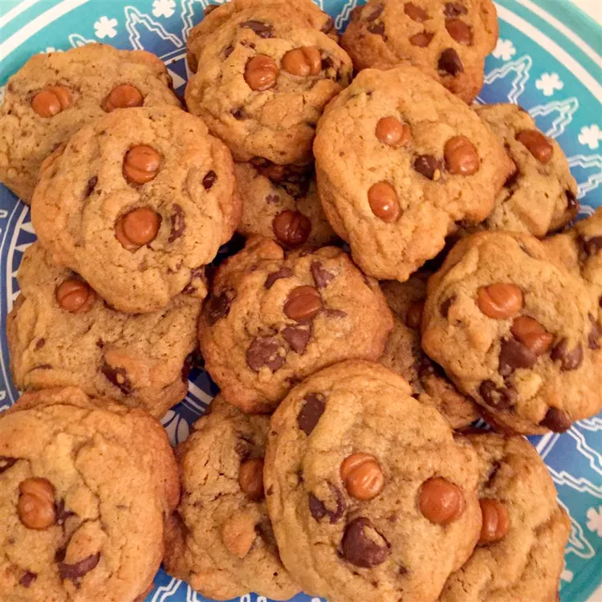

Salted Caramel Chocolate Chip Cookies

Description
Fairly simple chocolate chip cookies with caramel.
Ingredients
- 3 cups all-purpose flour
- 1 teaspoon baking soda
- 1 teaspoon coarse salt
- 1 3/4 cups brown sugar
- 1 cup softened unsalted butter
- 1/4 cup white sugar
- 2 eggs
- 2 teaspoons vanilla extract
- 2 cups chocolate chips
- 18 unwrapped caramel candies, each cut into small pieces
Steps
- Preheat oven to 350 degrees F (175 degrees C).
- Whisk flour, baking soda, and salt together in a bowl.
- Beat brown sugar, butter, and white sugar together in a bowl using an electric mixer until creamy.
Beat eggs, 1 at a time, into butter mixture until blended; beat in vanilla extract.
Stir flour mixture into butter mixture until dough is just combined; fold in chocolate chips.
- Divide dough into thirty six 2 tablespoon-size balls; arrange on a baking sheet. Press 3 caramel pieces into each dough ball.
- Bake in the preheated oven until edges are golden brown, 13 to 15 minutes.
Transfer cookies to a wire rack to cool.